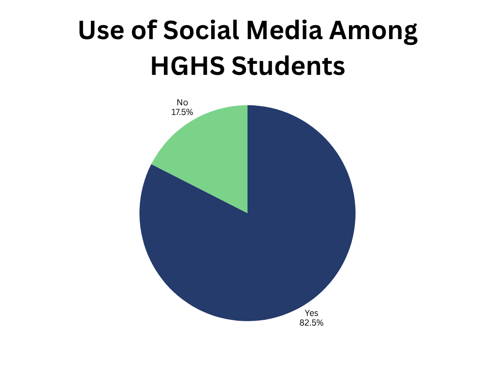
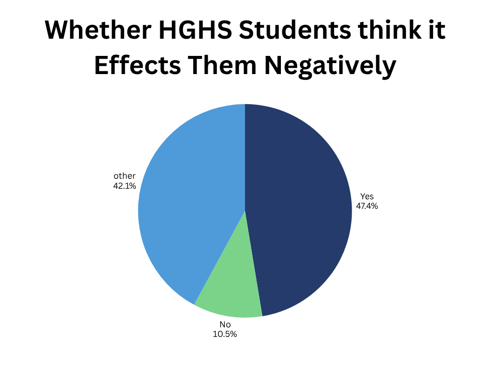

Social media can also be a place where it can lead to a negative impact on a teen. As social media is a place where anyone can do just about anything because of the lack of consequences.
You can be exposed to cyber bullying online. Many people aren't afraid to be hateful and disrespectful online because of the lack of consequences that they can face online. Online platforms can be faceless giving people the sense that they can say whatever they want.
Social media can set bad examples. What you see online is very likely to be made up to express themself like the perfect person. This can be the way they look, what they do, and so on.
Social media can also become addicting. Many find themselves doomscrolling online. Mark Zuckerberg has recently been claimed to intently make Instagram addictive over the safety of teens online.

When asked whether students at Hamilton Girls' High School used social media 82.5% replied yes they do use social media while 17.5% said that they didn't. When asked why they didn't use social media the top response was that they thought there wasn't any need to or because of parents restrictions.

When asked if they think social media affects people negatively 47.4% said they thought it did while 10.5% of students said it didn't. 42.1% of students had another reason on whether they think social media impacts them negatively. Most said it depends on how they use social media whether or not they think it impacts them negatively.